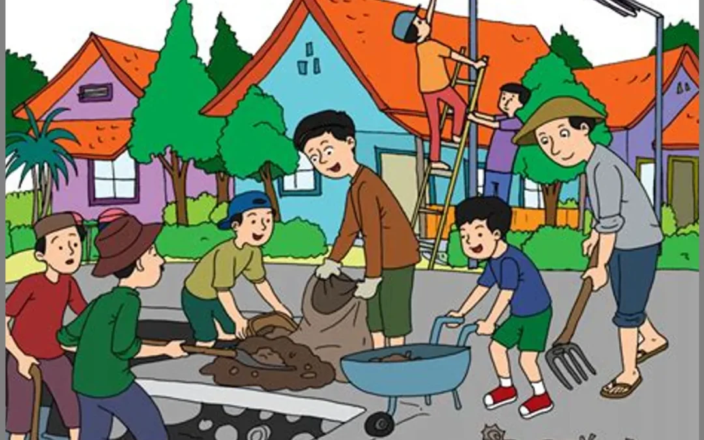
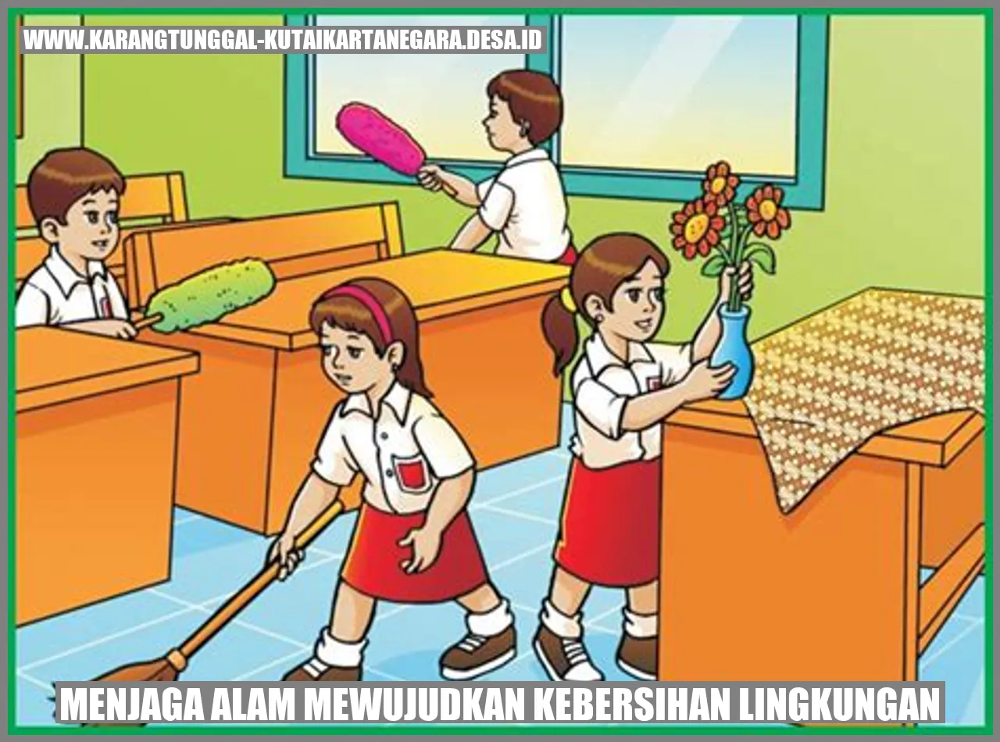
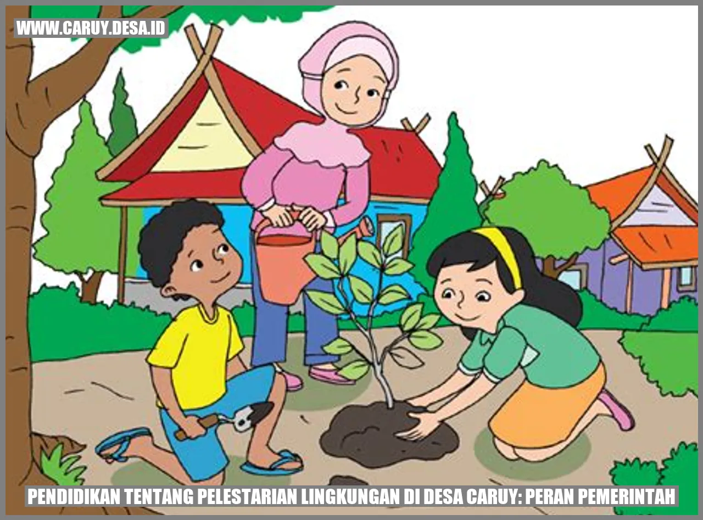
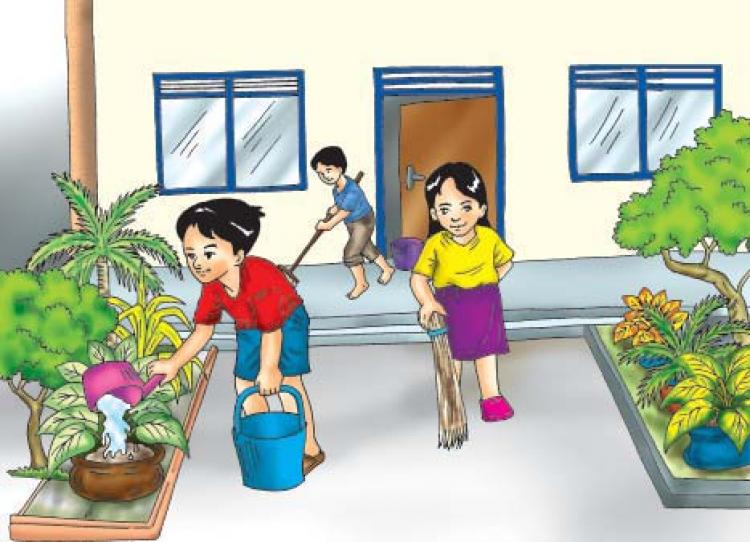
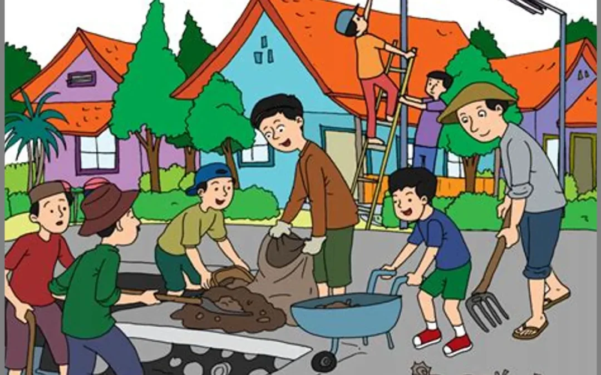
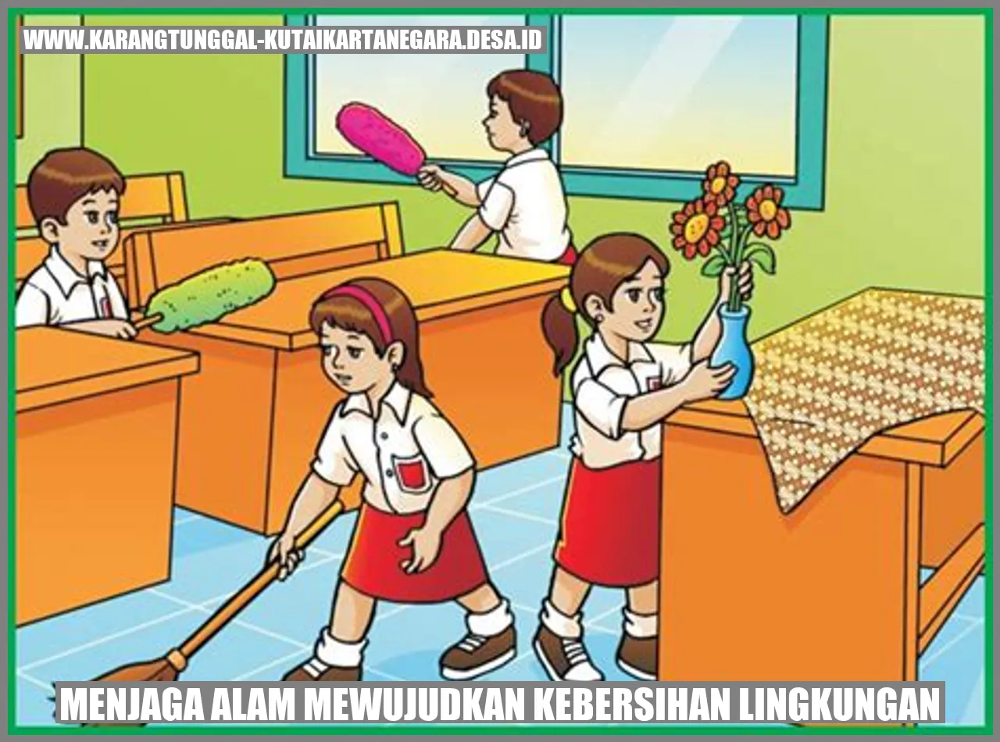
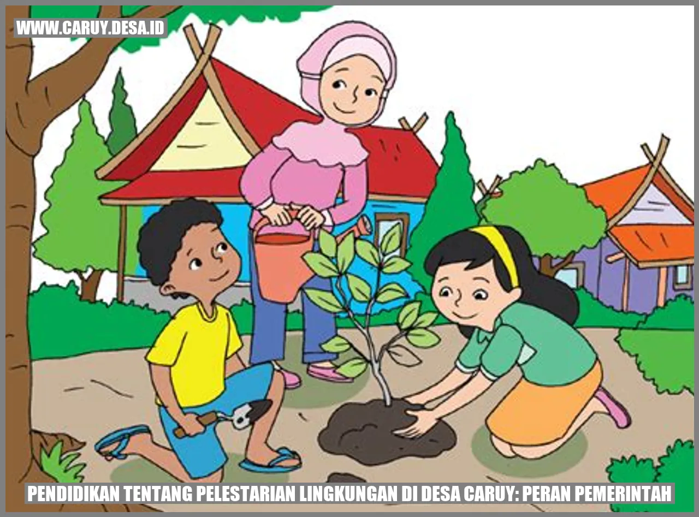
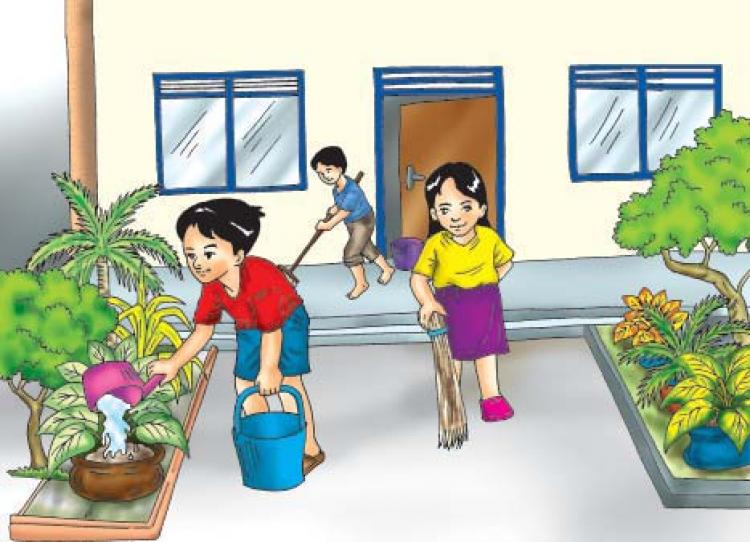
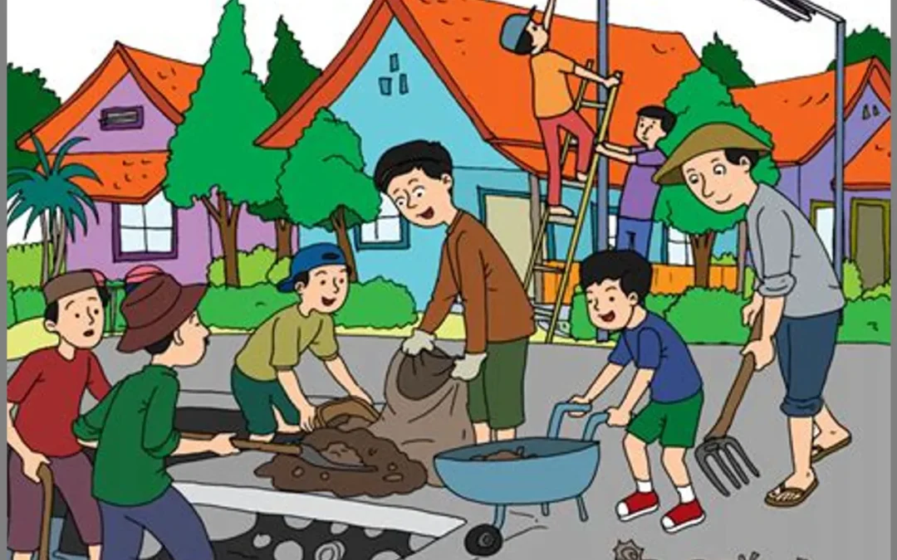
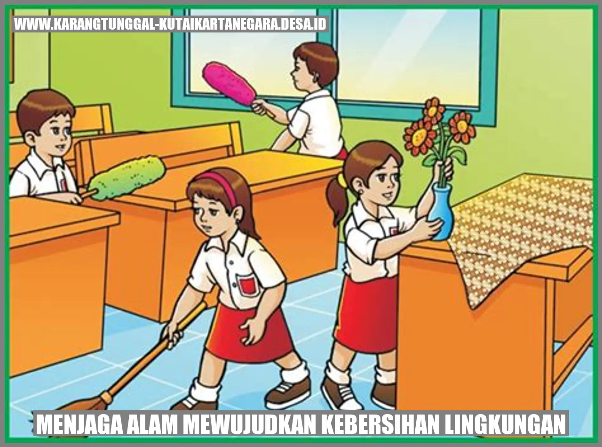
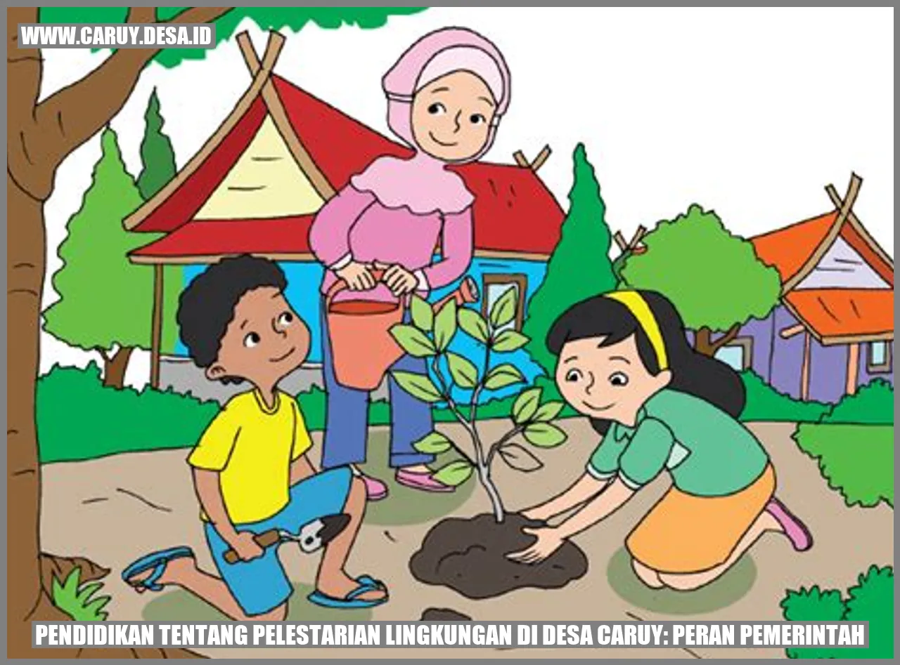
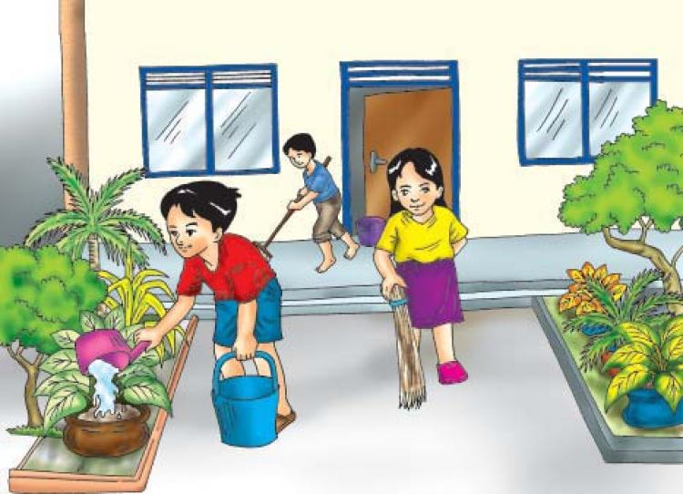
♻️ Salah satu cara menjaga lingkungan yaitu dengan mengurangi, menggunakan kembali, dan mendaur ulang, atau yang dalam Bahasa Inggris disebut dengan 3R, reduce, reuse, and recycle. Upaya ini biasanya berfokus pada pengurangan beberapa jenis sampah yang biasanya berbahan dasar plastik, kardus, styrofoam, dan lain sebagainya. Biasanya pada sampah non organik, namun juga bisa diterapkan pada beberapa jenis sampah organik.
🗑️ Upaya pertama yaitu mengurangi atau reduce. Pada umumnya, sampah-sampah yang bisa dikurangi berupa sampah non organik. Upaya ini bisa dilakukan dengan cara menggantikan penggunaan suatu benda dengan benda yang lebih ramah lingkungan. Misalnya, berbelanja menggunakan satu kantong kain yang bisa digunakan terus-menerus sebagai pengganti kantong plastik yang selalu didapat setiap kali belanja. Upaya ini tidak hanya berlaku pada sampah, namun juga berlaku pada emisi. Sebagai contoh, menggunakan kendaraan umum untuk pergi ke mana pun. Ketika kita menggunakan kendaraan pribadi, otomatis penggunaan kendaraan bermotor akan menjadi lebih banyak. Jadi, menggunakan kendaraan umum juga dapat mengurangi penggunaan kendaraan bermotor.
🔁 Upaya kedua yaitu menggunakan kembali atau reuse. Ini biasanya diterapkan pada sampah non organik yang masih utuh, seperti kantong plastik, kantong kertas, botol plastik, botol kaca, sedotan plastik, dan lain sebagainya. Upaya ini sudah cukup sering dan mudah diterapkan, namun terkadang kita juga masih tetap membuangnya setelah digunakan. Sebagai contoh, ketika kita membeli suatu makanan dalam kemasan kotak mika, seringkali kita masih membuangnya setelah menghabiskan makanan tersebut. Sedangkan, kita sebenarnya bisa mencucinya untuk digunakan kembali. Benda yang biasanya kita gunakan kembali yaitu kantong plastik dan kertas. Kita biasanya menggunakannya untuk membawa-bawa barang.
🌱 Upaya ketiga yaitu mendaur ulang atau recycle. Ini merupakan upaya yang juga bisa diterapkan pada sampah organik, seperti cangkang telur, kulit buah, cangkang kacang, dan lain sebagainya. Misalnya, cangkang telur dibuat menjadi mozaik, kulit jeruk digunakan untuk mengusir bau tidak sedap, dan lain-lain. Meski bisa diterapkan pada sampah organik, tetap lebih sering mendaur ulang sampah non organik karena cenderung lebih mudah. Memang ada benarnya juga, bahwa sampah non organik lebih perlu didaur ulang karena lebih mencemari lingkungan daripada sampah organik yang bisa terurai, namun beberapa sampah organik juga bisa dimanfaatkan untuk didaur ulang.
💡 Selain 3R, kita juga harus menghemat sumber daya alam, salah satunya energi dan juga air. Upaya ini seharusnya cukup sederhana untuk dilakukan. Misalnya, mematikan lampu dan menutup keran ketika sedang tidak digunakan. Selain itu, kita juga sebaiknya mencabut steker jika tidak digunakan, karena itu juga mengonsumsi energi listrik. Itu juga merupakan salah satu upaya untuk menghemat energi. Namun, terkadang kita juga terlalu berusaha menghemat sehingga membuat ini menjadi susah. Sebenarnya kita juga tidak perlu terlalu menghemat, namun kita hanya perlu menggunakannya secukupnya.
🚗💨 Kendaraan merupakan benda yang tidak ramah lingkungan karena menggunakan bahan bakar yang menghasilkan emisi berupa asap yang mengandung karbon. Masih lebih baik jika kendaraan memiliki filter knalpot. Namun, ada juga beberapa orang yang mencabut filter dengan maksud memberikan kesan menawan. Dengan dicabutnya filter knalpot, emisinya akan semakin besar sehingga lebih boros energinya dan juga lebih menyebabkan polusi.
🚘 Pada zaman sekarang, sudah ada kendaraan listrik. Kendaraan listrik menggunakan energi yang mirip dengan perangkat digital, yaitu baterai dan diisi dengan cara charging. Walaupun juga menghabiskan sumber daya alam yang tidak dapat diperbarui, kendaraan listrik jauh lebih ramah lingkungan karena tidak memiliki knalpot sehingga tidak menghasilkan emisi.
🌲 Tumbuhan juga berperan penting dalam menjaga lingkungan. Tumbuhan dapat mengubah udara kotor menjadi udara bersih. Mereka justru membutuhkan karbon dioksida untuk melakukan proses fotosintesis kemudian diubah menjadi oksigen. Fotosintesis merupakan proses pembuatan makanan bagi tumbuhan, sehingga udara kotor juga bisa bermanfaat untuk menyuburkan tumbuhan. Jadi, menanam banyak pohon akan menjadi efektif untuk menyegarkan udara.
🐶 Selain itu, kita juga perlu menjaga keanekaragaman hayati, yakni ekosistem. Ekosistem merupakan bagian dari lingkungan hidup. Salah satu caranya yaitu dengan menjaga kebersihan, yakni tidak membuang sampah ke ekosistem. Sampah juga dapat mencelakai hewan-hewan secara tidak langsung, misalnya ketika mereka mengira itu makanan. Selain kebersihan, kita juga harus menghemat pemanfaatan sumber daya alam dari ekosistem. Kita hanya boleh memanfaatkannya secukupnya dan juga sebaiknya dilestarikan. Misalnya, memanfaatkan batang pohon secukupnya kemudian hutan direboisasi sehingga tidak gundul.